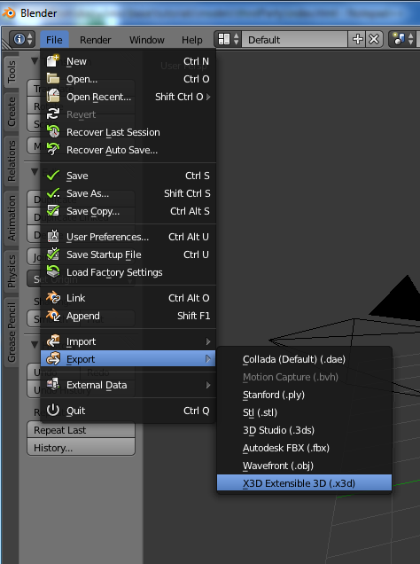
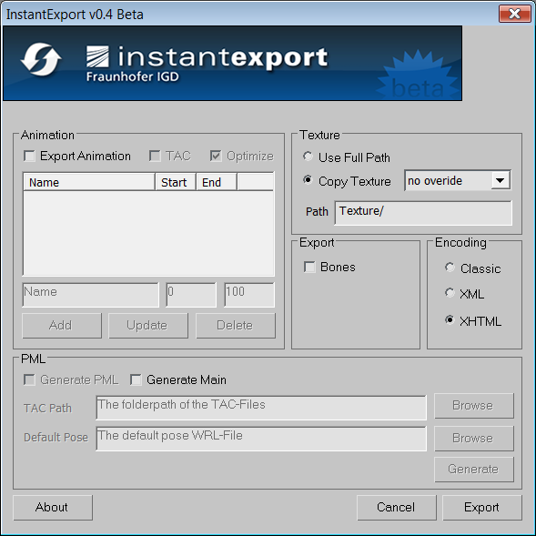

You might want to import your own 3D-Models in your X3DOM application, which you have created in some 3D modelling software. Since X3DOM only supports X3D files this tutorial will show you how to export your models properly. We cover export from Maya, Blender, 3Ds Max and even World of Warcraft .
If you are working with Autodesk Maya
for modeling, shading and animating your 3d scenes, use this tutorial to create an interactive X3DOM website out of your model.
This tutorial is tested with Autodesk Maya 2011. Nevertheless, the procedure should work for all Maya versions.
The basic idea is to export your scene to VRML and convert this to an X3DOM/HTMLsite using InstantReality’s aopt binary (see previous tutorial ).
Note: aopt is automatically coming with your InstantReality player installation. You will find the executable within the bin folder of the Player. If you don’t have Instant Reality installed yet, download and install from www.instantreality.org.
Converting Blender scenes into X3DOM webpages is pretty simple: Blender already supports direct X3D export.
Blender Version 2.4 seems to export some more nodes (e.g. lights), but in general it works.
Just finish your model in Blender and export to x3d file format, as shown below.

If you are using Autodesk 3ds Max for modeling (available only for Microsoft Windows),
you can install our exporter plug-in InstantExport.
If you do not yet have installed 3ds Max,there is also a 30-day trial version of the modeling software available. Nightly beta builds of InstantExport are available for download
here.
InstantExport is the InstantReality X3D exporter for 3ds Max and not only exports XML-based X3D as well as VRML, its classic encoding, but it can also now directly export to HTML/XHTML.
But please note that – as the exporter plug-in is still under development – there are still lots of features in Max, which yet cannot be properly exported. So, if you find a bug,
please report it in the InstantReality forum .
After having downloaded the exporter, unzip the zip file and choose the correct version for your system and Max version.
After that, (assumed you are using the standard installation path and 3ds Max 2008) copy the file InstantExport.dle (the Max version of a DLL) into C:\Program Files\Autodesk\3ds Max 2008\plugins.
Then start 3ds Max, load the 3d model you want to export, choose Export in the File menu, type in a file name, and select the file type – in this case InstantExport (.WRL,*.XHTML,*.X3D)*
After that, the exporter GUI pops up. Here, under Encoding choose XHTML, as shown in the screenshot below. Finally, press the Export button. For more information, the zip file also includes a help file for the exporter.

WARNING: World of Warcraft Models are Blizzard property. You can not use them on your site without permission from Blizzard.
The WOWModelViewer project is an open source application to create machinima with characters and models form the World of Warcraft MMORPG.
One of its features is the ability to export models into various formats, two of them being X3D and X3DOM.
The X3DOM option directly outputs an XHTML file with the appropriate header code. In its current released version 7.0.1 r462, only static models can be exported, but an option to export animations as well is already available in the code.
To export a model you’ll need a full World of Warcraft installation (for instance a 10 day trial version) and the WOWModelViewer. Open the application, select a model on the right hand side and click on File->Export model->X3D in XHTML.
You can view an example here.